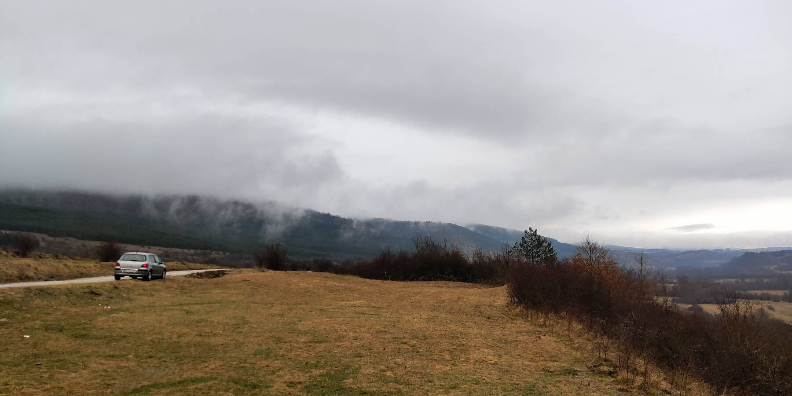

С переездом в Нови Сад мы практически не видели снега в этом году. Непорядок! В стране стремительно теплеет, VentuSky показывает, что снег остался лишь на Копаонике, Старой Планине и на границе с Черногорией. Значит, валим на Стару Планину: ехать туда удобно, сплошной хайвей.
Приятной неожиданностью стало то, что от Ниша до Софии протянут нормальный автобан, по которому мы бодренько долетели до Пирота. Я не знал, думал, там обычная двухполоска. А вот погода нифига не радовала, если честно. Наперегонки с дождём всю дорогу. Тем не менее, именно эта погода позволила сбыться одной из моих старых мечт: посмотреть на облака сверху, не будучи при этом в самолёте. Вот это — не море, не озеро. Это облако, в котором лежит Пирот:
Не заглядывая в город, рванули в деревню Славиню, смотреть Росомачьи лонцы. Влажность 100%.



Деревня — лютый балканский трэш, большая часть домов заброшена. Плохо. Но ещё хуже то, что в некоторых домах, выглядящих заброшенными, курится дымок: там живут люди! Вот такая беднота.

То ли недостроенный отель, то ли просто чья-то эксцентричная архитектурная фантазия:
Зато хорошо живут люди, собирающие на горе белые грибы. Видели чудесный ухоженный дворик с опрятным, добротным домиком и богато отделанными резными воротами: «Prodajem vrganj». Один на всю деревню. Хреново, наверное, жить в нём, кругом-то разруха.
Но и весна:
Местами тропа к лонцам напоминала родные болотца Новгородчины. Плюс накрапывающий дождик. В общем, не ту гору назвали Мокрой…
.jpg)
Наконец дошли: каньон реки Росомачи, он же Славиньско грло, он же Росомачки лонци. «Лонац» по-сербски — «котёл», «горшок», такая вот этимология. Время, пожалуй, для посещения мы выбрали идеальное: начало весны, ещё есть лёд, но при этом уже большая вода от таяния снегов. Летом можно пройти через весь каньон по воде; сейчас холодно. Ограничились небольшой прогулкой по его краю. Впечатления всё равно самые наилучшие, точку крайне рекомендую к посещению. Думаю, мы даже вернёмся туда летом.
.jpg)
.jpg)
На камнях отлично себя чувствуют не только мхи, лишайники и суккуленты. Вот, например, вырос папоротник костенец волосовидный (Asplenium trichomanes). Тень и влажный воздух, всё, как он любит:

Рядом с ним примостились очитки (седумы). Это товарищи из рода толстянковых, несть им числа и родов!

А это просто очень жизнерадостная, изумрудная растения, ну как мимо такой красоты пройти?

А ещё на пути к каньону можно встретить парящее дерево. Передавайте ему привет:

В Пирот вернулись уже вечером. Дорога не в самом лучшем состоянии, да ещё и на перевале снег — приходится ехать осторожно. Очень впечатлил спуск в город: на фоне чёрного неба оранжевые лампы уличных фонарей окрашивали в кроваво-красное туман, в котором с трудом угадывались контуры домишек. Практически спуск в Аид. Фотографии нет, извините, стрёмновато в таких условиях останавливаться на серпантине: чего доброго, кто сзади догонит.
Пока ехали, изучали интернеты на предмет «чо пожрать в Пироте». Чувствовалось, что есть там умеют, и кухня (точнее, особенности готовки) должны отличаться от среднесербских. Всё-таки почти Болгария. Оказалось, есть местный пиротский качкаваль, плескавицу с которым мы и употребили в кафане «Код пирочанца». И я вам скажу — это было потрясающе. Даже Ольга Игоревна, которой сербская еда уже поперёк горла стоит, уплетала за обе щёки. Чевапы тоже хорошие. И ракия. И ореховые колбаски на десерт. И печёная картошка… В общем, ещё раз туда пойдём, когда будем в городе. Заяц с лестницей вместо жопы как бы одобряет. :)